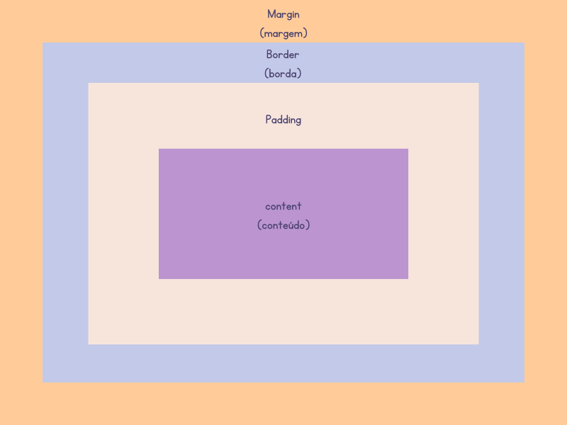
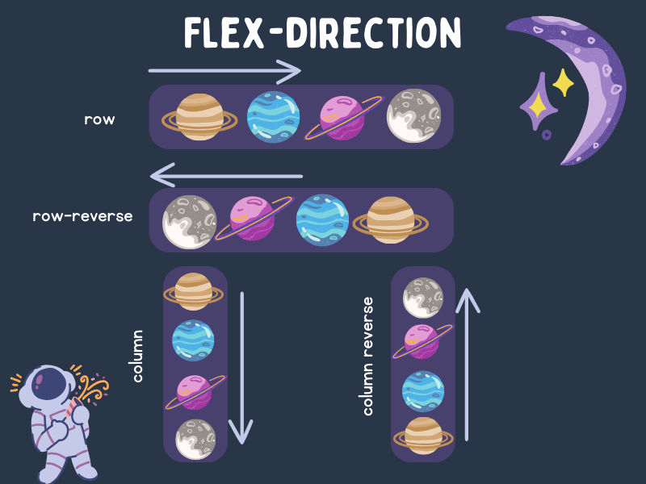
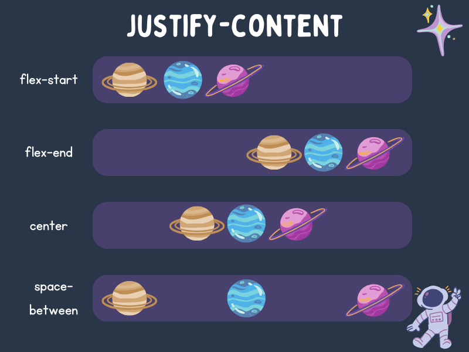
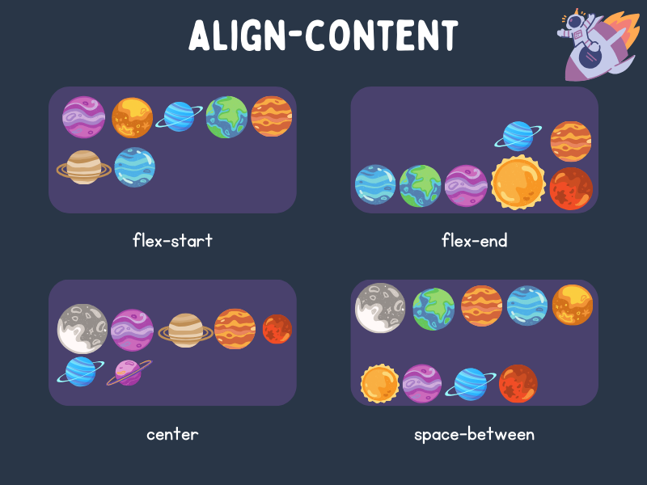
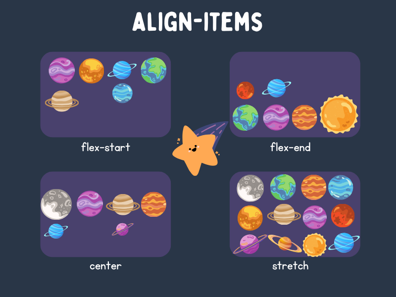
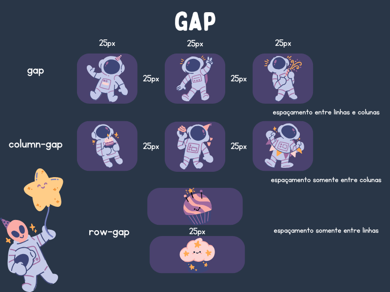
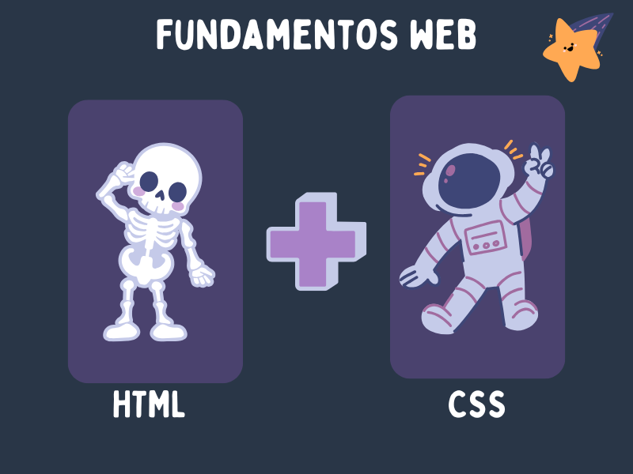

CSS
O que é CSS?
CSS significa Cascading Style Sheets, traduzindo para o português seria Folhas de Estilo em Cascata. Vamos pensar que estamos construindo uma casa de lego, já vimos que o HTML serve como os blocos de construção, paredes, janelas, teto, mas como esses itens se parecem, onde são posicionados? Assim conhecemos o CSS, onde ele vai dar o estilo a nossa página, deixar a posição dos itens no lugar que desejamos, escolher a cor de cada item, o posicionamento das imagens de maneira correta.
Para que serve o CSS?
O CSS serve para escolher cores, deixar títulos em uma coloração e fundo de outra, alterar tamanhos de imagens, títulos, organizar disposição dos itens inseridos no HTML.
O CSS é como se estivéssemos vestindo nosso esqueleto que seria nosso documento HTML, com o CSS podemos personalizar um documento HTML de muitas maneiras diferentes, isso só depende do modelo em que queremos apresentar nosso conteúdo.
Como funciona?
Vamos imaginar que estamos com nossa casa de lego montada (HTML), precisamos escolher a cor das paredes, tamanho das janelas, onde cada item vai ficar posicionado, o CSS funciona de maneira parecida onde precisaremos escolher qual cor para nosso fundo vamos usar, qual vai ser a cor do nosso título e texto, onde vamos posicionar as imagens e demais itens que vamos inserir, e assim conforme ficar mais agradável escolhemos cores e posicionamentos.
Vamos observar o exemplo abaixo onde temos o documento HTML que seleciona o texto “Olá, mundo” atráves da tag <h1> (título) e no documento CSS abaixo onde ele diz que a cor (color) é verde (green) e que o tamanho da fonte (font-size) é 40 pixels.
<h1>Olá, mundo!</h1>
h1 {
color: green;
font-size: 40px;
}
Sintaxe Básica CSS
O CSS é um conjunto de regras que definem como os elementos da página web serão exibidos. Para isso temos regras que seguem uma estrutura simples.
• Estrutura básica de uma regra CSS
No exemplo a seguir temos o “seletor” que está indicando qual elemento HTML estamos estilizando, o seletor pode ser uma tag (h1, p), a propriedade é a característica que estamos escolhendo (cor, tamanho da fonte, fundo) e por fim o valor que estamos atribuindo ao elemento (cor, tamanho, medida).
seletor {
propriedade: valor;
}
No exemplo abaixo estamos utilizando como seletor a tag h1 e como propriedade estamos utilizando color (cor) e font-size (tamanho da fonte) e valor atribuindo estamos utilizando a cor azul e tamanho da fonte 36 pixels.
h1 {
color: blue;
font-size: 36px;
}
Modelo Caixa CSS
Vamos imaginar que cada elemento da nossa página seja uma caixa, essa caixa não é somente conteúdo visível, como os textos e imagens, mas também incluem os espaços ao redor, bordas e outras propriedades, esse conceito é conhecido como modelo de caixa CSS.
- Componentes do modelo caixa
- Conteúdo (content): são os textos, imagens, conteúdos dentro da caixa;
- Padding: é o espaço entre o conteúdo e a borda da caixa;
- Borda (border): é a linha que delimita a caixa;
- Margem (margin): é o espaço entre a caixa e os elementos ao redor.
No exemplo abaixo podemos ver ilustrado o modelo de caixa CSS .
Precisamos entender o modelo em caixa pois é através dele que podemos controlar nosso layout e verificar onde as caixas melhor se encaixam.
- Propriedades CSS
- width: define a largura da caixa do conteúdo;
- height: define a altura da caixa do conteúdo;
- padding: define o espaço interno da caixa;
- border: define a borda da caixa;
- margin: define o espaço externo da caixa.
No exemplo abaixo definimos a largura de 200 pixels, altura de 150 pixels, borda preta de 1 pixel, espaço interno de 10 pixels e o espaçamento externo de 20 pixels
.caixa {
width: 200px; /*Define a largura*/
height: 150px; /*Define a altura*/
border: 1px solid black; /*Define a borda*/
padding: 10px; /*Define o espaço interno*/
margin: 20px; /*Define a margem*/
}
Unidades de medida
As unidades de medida no CSS servem como métricas para definir o tamanho e posição dos elementos em uma página web. Podemos usar como analogia de volta a nossa casa de lego, onde precisamos saber o tamanho de cada bloco e onde encaixá-los sem que fique desproporcional, onde encaixar as portas e janelas de maneira que fique correto. Dentro das unidades de medidas existem as absolutas e relativas.
- Unidades Absolutas
As unidades absolutas servem para layouts fixos, onde não se adaptam a diferentes tamanhos de tela. Podemos usar como exemplo a tela do computador e a tela do celular, são de tamanho diferentes, portanto a quantidade de pixels que cabe em uma tela do computador não cabe nos pixels de uma tela de celular.
- px (pixel): é a mais comum, representa um ponto luminoso na tela;
- cm (centímetro) e mm (milímetro): são unidades físicas, podem variar de tela a tela dependendo da resolução e não são muito utilizadas no design web.
- Unidades Relativas
- % (porcentagem): define um valor em relação ao tamanho do elemento principal;
- vw (viewport width): representa 1% da largura da viewport (janela do navegador);
- vh (viewport height): representa 1% da altura da viewport (janela do navegador).
As unidades relativas servem para layouts responsivos e escaláveis, onde combinadas podem criar designs flexíveis e adaptáveis para diferentes dispositivos.
Seletores
Seletores são as etiquetas que escolhemos no nosso HTML anteriormente e que agora farão sentido no nosso CSS. Os seletores vão servir como etiquetas para puxarmos do nosso documento HTML e estilizar no nosso documento CSS, de maneira que cada item selecionado fique organizado e estilizado.
Os seletores são usados para aplicar estilos a elementos específicos sem que afete outros elementos, são também utilizados para manter o código CSS organizado e fácil de entender e por fim os estilos podem ser reutilizados em diferentes partes do site.
- Tipos de Seletores
- Seletores de elementos (tags)
Selecionam todos os elementos de um determinado tipo. No exemplo abaixo, selecionamos a tag
<p>para estilizar, o que significa que todos os parágrafos que serão exibidos na tela serão azul (blue).p { color: blue; /* Todos os parágrafos ficarão azuis */ } - Seletores de classes
Selecionam elementos de uma determinada classe. No exemplo abaixo, selecionamos a classe “.destaque” que estava no documento HTML, e definimos que a cor dos elementos presentes nessa classe será diferente das demais, no exemplo a cor padrão dos textos é preto mas na classe destaque os textos presentes nela serão rosa (pink).
.destaque { color: pink; /*Elementos presentes em .destaque ficarã }No exemplo abaixo podemos ver a classe aplicada dentro no HTML que editamos acima no CSS.
<p class="destaque">Este texto será em rosa.</p> - Seletores de id
Selecionam um elemento único com ID específico. No exemplo abaixo, selecionamos o Id “cabecalho” do nosso HTML e mudamos a cor do fundo (background-color) para verde (green).
#cabecalho { background-color: green; }Abaixo podemos ver a ID sendo aplicada dentro do HTML, onde estamos dentro da tag “header” (cabeçalho) e estamos aplicando um ID (identificação) para nosso site.
<header id="cabecalho">Cabeçalho do site</header>
Estilização
A estilização no CSS é o processo de definir a aparência visual do site, é como se estivéssemos aplicando uma skin CSS para nosso esqueleto HTML, definindo cores, formatação das letras, tamanho, layout e imagens que melhor combinem com nosso design criado para página.
A estilização engloba tudo que vemos em um site, desde cores de fundo, formatação dos textos e a maneira em que montamos a disposição dos elementos na página. A seguir veremos os principais aspectos da estilização no CSS.
- Cores
As cores são a tinta em que usamos para definir a cor das letras dos textos, títulos e cores de fundo da nossa página, são elas que trazem personalidade para a página. No CSS temos algumas maneiras de definir as cores.
- Nome de cores
Essas são as definições de cores mais comuns e possuem os nomes pré-definidos como red, blue, yellow, green, white, etc. São sempre escritas em inglês e é a forma mais fácil de definirmos uma cor. No exemplo abaixo estamos defindo a “color” para azul, ou seja, estamos defindo as cores dos textos e na linha abaixo no “background-color” estamos definindo um fundo cinza para nossa página.
p { color: blue; /* Texto azul */ background-color: grey; /* Fundo cinza claro */ } - Hexadecimal
As cores escritas em hexadecimais tem a representação baseada por números hexadecimais (0-9, A-F). Essa maneira de definir cores é a mais precisa, definindo tons específicos de cores. Essas cores podem ser encontradas em sites próprios de paleta de cores, onde podemos procurar o tom que desejamos e achar o código hexadecimal que ela representa (em seguida deixarei algumas sugestões de sites). No exemplo abaixo deixei uma cor hexadecimal representada pelo código “#556B2F” que traduz a cor verde oliva (um tom específico de verde).
p { background-color: #556B2F ; /* Fundo verde oliva */ }Existem dois outros tipos de cores que podem ser usadas, conhecidas como RGB e RGBA, mas são maneiras de definir as cores de modo mais avançado, portanto, vamos trabalhar utilizando os nomes de cores e a definição por hexadecimal.
- Nome de cores
- Fontes
As fontes são elementos fundamentais no design de um site, as fontes transmitem personalidade, legibilidade e influenciam na experiência do usuário.
Existem propriedades no CSS que utilizamos para estilizar nosso texto HTML.
- font-family: define a família da fonte que esta sendo utilizada.
- font-size: define o tamanho da fonte, geralmente em pixels (px) ou porcentagens (%).
- font-weight: define a espessura da fonte, valores podem ser normal (tamanho padrão),bold (negrito) e valores numéricos de 100 a 900 (quanto maior o número, mais espessa a fonte).
No exemplo abaixo definimos a fonte família “Arial” e o estilo da família “sans-serif” (que é uma familia de fonte que são mais simples, retas e limpas e são principamente utilizadas em textos curtos para web), definimos também o tamanho da fonte em 16 pixels e também definimos que nosso texto dentro do nosso seletor “p” será em negrito.
p { font-family: Arial, sans-serif; /* Fonte família Arial font-size: 16px; /* Tamanho da fonte 16 pixels */ font-weight: bold; /* Texto em negrito*/ }
Layout
O layout no no CSS é como organizamos os elementos de uma página web na tela, criando um desing visualmente agradável e funcional, definindo onde cada elemento vai compor a página e como vão ser organizados entre si.
Para montar um layout no CSS precisamos conhecer os principais mecanismos para criar, cada feramenta é necessário sendo uma complementar da outra.
- Modelo de Caixa
Como vimos anteriormente, o CSS se baseia no modelo caixa, onde cada elemento HTML é considerado uma caixa, com margens, bordas, preenchimento e conteúdo. Essa propriedade permite controlar o espaço ao redor de cada elemento.
Vou deixar novamente a imagem do modelo caixa do CSS. De maneira que fique mais claro, a parte do meio em lilás o content, nada mais é que o contéudo que estamos estilizando (podemos usar o exemplo da tag
<p>do HTML, onde escrevemos uma frase “Frase exemplo estilizada”), fora dessa caixa temos outra caixa nomeada de padding que seria o espaçamento da caixa conteúdo com os demais itens, na caixa em azul border, simoboliza a borda da nossa caixa conteúdo que pode ser estilizada definindo uma borda sólida ao redor, e por fim a última caixa, em laranja, define a margem de espaçamento que vai ser definido para separar esse caixa principal de outra caixa estilizada. - Flexbox
Flexbox é projetado para criar layouts flexíveis, podendo controlar o posicionamento, alinhamento e distribuição de elementos dentro de um container, simplificando a contrução de páginas web. Os conceitos fundamentais presentes no flexbox são o container flex, itens flex e suas direções.
- Container flex
O container flex é o elemento pai (significa que é o elemento que contém outros elementos dentro dele, chamados elementos filhos) onde aplicamos sobre os elementos “filhos”. Declaramos o container flex a partir do “display: flex”. No exemplo estamos fazendo a declaração do display flex (elemento pai), nas próximas linhas inserimos os itens que desejamos posicionar (elementos filhos), veremos melhor a seguir.
.container { display: flex; } - Flex direction
O flex direction define os eixos em que estamos posicionando nossos elementos, que pode ser em uma linha horizontal ou vertical.
Na imagem a seguir podemos ver duas linhas de intens na horizontal representado pelo “row”, que traduzindo seria linha, uma linha da esquerda para direita e no “row-reverse”, linha invertida, seria a linha da esquerda para direita. Abaixo temos o “column” que significa coluna, onde define a direção de baixo para cima e ao lado a “column-reverse”, coluna invertida, que define a direção de baixo para cima. Esses são as direções que podemos usar no nosso flex-direction.
 - Itens flex
Os itens flex são os elementos “filhos” do container flex (pai), o que signfica que eles herdam as propriedades do flexbox e podem ser manipulados de diferentes formas.
- Justify-content
O justify-content ajuda a organizar os itens em uma linha ou coluna. Ele tem quatro opções principais:
- flex-start: Coloca os itens no início (à esquerda ou no topo).
- flex-end: Coloca os itens no final (à direita ou embaixo).
- center: Centraliza os itens.
- space-between: Distribui os itens igualmente, com espaços entre eles.
Essas opções ajudam a controlar como os itens ficam dispostos no container flex, tornando mais fácil criar layouts organizados.
 - Align-content
Align-content é uma ferramenta útil do CSS Flexbox. Ela ajuda a organizar grupos de itens dentro de um container flex. Pense nela como um jeito de arrumar prateleiras em uma estante:
- Ela decide como distribuir o espaço extra entre as "prateleiras" (linhas de itens).
- Funciona de forma parecida com justify-content, mas em outra direção
- Ajuda a dar um visual organizado e equilibrado para seus elementos na página.
Com align-content, você pode ajustar facilmente como seus itens ficam dispostos, criando layouts mais bonitos e organizados.
 - Align-items
Align-items é uma ferramenta do CSS Flexbox que ajuda a organizar os itens dentro de uma caixa flex. Ela controla como os itens se alinham na direção oposta à principal. Por exemplo:
- Se os itens estão em uma linha (row), o align-items ajusta sua posição vertical.
- Se os itens estão em uma coluna (column), ele ajusta sua posição horizontal.
Com essa propriedade, você pode facilmente alinhar seus elementos de forma precisa e flexível.

- Justify-content
- Container flex
- Gap
Gap é um recurso do CSS Flexbox que ajuda a criar espaços entre os itens dentro de uma caixa flex. Ele torna mais fácil organizar o layout da página, adicionando espaços iguais entre os elementos. Esses espaços podem ser tanto na direção horizontal quanto na vertical.

Unindo CSS e HTML
Unir HTML e CSS refere-se ao processo de integração entre a estrutura HTML e os estilos CSS para criar páginas web visualmente atraentes e funcionais. Isso envolve a aplicação de regras de estilo CSS aos elementos HTML para controlar sua aparência e layout.
